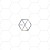
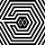
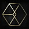
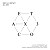
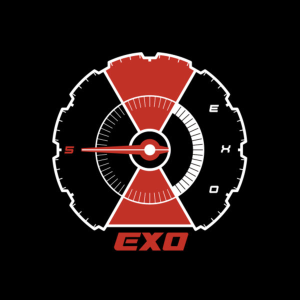

2012

제4회 MAMA [뉴 아시안 아티스트상]
제27회 골든디스크 어워즈 [음반 부문 신인상]
제 22회 하이원 서울가요대상 [신인상]
.
.
2013

제5회 MelOn Music Awards [베스트송상]
Mnet Asian Music Awards [올해의 앨범상]
KBS 가요대축제 [올해의 노래상]
제29회 골든디스크 어워즈 [음반 부문 대상]
제23회 하이원 서울가요대상 [대상]
.
.
총 26회 수상 (대상 5개)
+ 정규1집 'XOXO' 밀리언셀러 달성
2014

제6회 Mnet Asian Music Awards [올해의 앨범상]
제6회 Mnet Asian Music Awards [올해의 가수상]
제29회 골든디스크 어워즈 [음반부문 본상]
제30회 골든디스크 어워즈 [음반부문 대상]
제24회 하이원 서울가요대상 [대상]
.
.
총 28회 수상 (대상 5개)
2015

제7회 MelOn Music Awards [올해의 앨범상]
제27회 Mnet Asian Music Awards [올해의 앨범상]
제25회 하이원 서울가요대상 [대상]
제30회 골든디스크 어워즈 [음반부문 대상]
.
.
총 25회 수상 (대상 4개)
+ 정규 2집 'EXODUS' 더블 밀리언셀러 달성
2016

제1회 아시아 아티스트 어워드 [가수부문 대상]
제8회 MelOn Music Awards [올해의 아티스트상]
제28회 Mnet Asian Music Awards [올해의 앨범상]
제31회 골든디스크 어워즈 [음반부문 대상]
제26회 하이원 서울가요대상 [대상]
.
.
총 21+@회 수상 (대상 5개)
+ 정규3집 'EX'ACT' 트리플 밀리언셀러 달성
2017
제1회 소리바다 어워즈 [대상]
제2회 2017AAA [AAA 대상, 가수부문]
제29회 Mnet Asian Music Awards [올해의 앨범상]
.
.
총 7회 수상 (대상 3개)
+ 정규4집 'The War' 쿼드러플 밀리언셀러 달성
2018

정규 5집 'don't mess up my tempe'퀸터플 밀리언셀러 달성